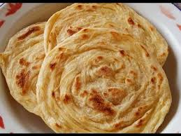

Resep Kue Maryam

Bahan-Bahan :
- 250gr tepung terigu
- 1 buah telur
- 3 sdm margarin, lelehkan
- 100 ml air hangat
- 2 sdm susu bubuk
- 1/2 sdt garam
- Margarin leleh untuk olesan
- Minyak untuk merendam
Langkah-langkah
- Campur semua bahan roti jadi satu

- Uleni sampai kalis (aku pake tangan) jangan takut
jika adonan lengket ya, lumuri tangan sesekali dg tepung (tapi jangan menambahkan
tepung) uleni terus sampai adonan kalis.

- Kalisnya adonan canai tidak sekalis adonan roti ya,
kira2 seperti ini sudah cukup.

- Bagi adonan menjadi 12 bagian. Kalau mau lebih besar
bagi jadi 10 bagian.

- Lumuri/rendam adonan dengan minyak goreng (supaya adonan
tidak kering) diamkan 1-3 jam (boleh semalaman asal ditutup serbet)

- Setelah di rendam minyak, adonan akan lebih lentur dan kalis
daripada sebelumnya.

- Ambil 1 adonan. Pipihkan melebar setipis mungkin. Olesi dengan
margarin cair. Gulung memanjang. Linting berlawanan arah spt konde. Tumpuk kedua bagian,
terakhir pipihkan lagi. Silahkan gambarnya dilihat (urutannya dari kiri ke kanan lalu balik
lagi ke gambar paling kiri)

- Panaskan teflon dengan api kecil aja. Panggang adonan dengan sekali
balik, tekan-tekan supaya matangnya rata.

- Canai siap disajikan.. dengan kuah kari atau topping messes, keju serta
SKM juga enak